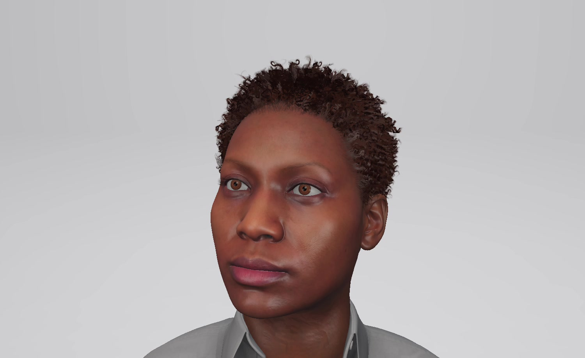

Digital humans: soft facial shadows with adaptive resolution
Shadow map resolution follows the character's size on screen, and the studio light gives a soft portrait shadow — no steps on the neck or ragged edge by the nose.


A shared CPU AdaptiveShadowResolution policy picks a 1024, 2048 or 4096 shadow map from viewport height, camera distance and field of view and the share of the frame the character covers. It upgrades at 15% excess demand and downgrades only after 60 frames of low demand, so the resolution does not jump.
The VIVID portrait key light uses soft PCF instead of the general PCSS: an artistic facial filter, not a physically exact area light. Gameplay lighting and shaders are unchanged.
- Verified
- CTest adaptive_shadow_resolution: 1/1 PASS in Release with assertions; native VIVID Creator and Studio builds; video of 168 frames at 1500×920, 24 fps, 0 pipeline failures. Frames are native output without retouching.
- Limitations
- The density estimate is conservative, not per pixel; these are not cascaded or virtual shadow maps. Lower resolution tiers at full body are not confirmed with this asset.